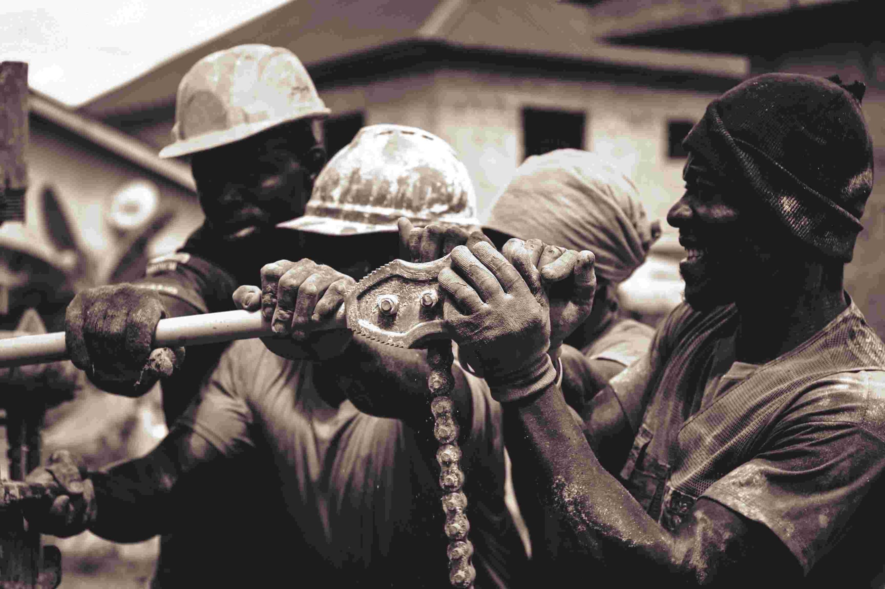

MINING
Mining, especially gold mining, is a major activity in Mubende. It brings income and employment but also comes with health, environmental, and legal challenges. Efforts are ongoing to make it safer and more sustainable for the local communities.

FARMING
Farming in Mubende shows a dynamic shift—from subsistence to market oriented, nutrient sensitive, and climate resilient agriculture. Farmers are diversifying into improved crops, trees, livestock feed innovation, and honey/dairy value chains

TOURISM
Tourism in Mubende is centered around cultural heritage, natural beauty, and historical legends. Key attractions include the Nakayima Tree, a sacred spiritual site linked to the ancient Bachwezi; the Tanda Pits, mysterious holes tied to Buganda mythology